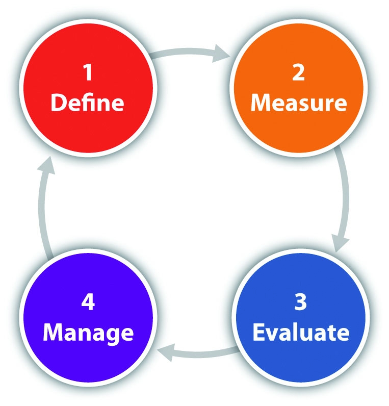

The process for sustainability reporting is similar to all performance-based business management processes. It involves the same steps, including goal setting, measurement, analysis, and action, but differs in the type of information collected. As with any business initiative, it is essential that management be supportive—in this case of sustainability—and that management provides the necessary financial, technical, and human resources to support each step of the process. The success of sustainability reporting depends on the commitment of the senior management in the organization.
Information technology is a major consideration in sustainability reporting. Businesses should be prepared to effectively manage the large amount of information related to sustainability and need to have information systems that can help to integrate sustainability information into their existing corporate reporting systems. These information systems must be designed to communicate performance metrics to decision makers throughout the organization. Large corporate software vendors, such as SAP and Oracle, which provide traditional business software, have integrated sustainability modules that help businesses with measuring their social and environmental performance data. In addition, a variety of custom software applications are available to assist businesses with measuring their environmental and social impact.
Figure 4.1 Sustainability Reporting Cycle
The steps in the sustainability reporting cycle define performance goals and metrics, measure performance (data collection), evaluate performance (includes analysis and reporting), and manage performance.
The first step is to define the sustainability goals of the company. This is an important action and should guide the rest of the process. While sustainability reporting is meant to be broad and comprehensive to provide a full “360 degree” view of the company or documentation of the complete ecological and societal impact of a company, it must be bound at a level that is pragmatic and appropriately focused for a company. Typically resource limitations will require a company to take a phased in approach where it focuses on the areas of higher impact and importance and gradually expands to areas of lower impact and importance. Organizations should put their resources into collecting the information that is most relevant to their sustainability efforts.
The company should have an overall vision of why it wants to integrate sustainability efforts into its business operations. Is the goal of the company to “change the world”? Or is it more simply to document the company’s progress on environmental and social impacts? Is the audience for the reporting internal, external, or both? A company will need to evaluate whether its focus is on continuous improvement in its own individual actions or if it is measuring its performance relative to a broader target, such as a reduction in greenhouse gas (GHG) emissions.
The next step is to develop key performance indicators (KPIs) that will be used to measure progress toward those goals. A key performance indicatorA performance measure that companies collect to track the success of a particular activity. is a performance measure from operational data that is used by organizations to track a particular activity.
There are different methods for establishing KPIs, but one typical method is the SMART criteria. In SMART, a measure has a specific business purpose and is measurable, achievable, and relevant to the success of the organization and can be measured over a specific period of time.
Companies need to take into account their financial, human, and information technology resources when selecting KPIs. Data collection cost must be factored into performance metric selection. This includes the availability of data and cost to integrate into existing information systems and existing business processes. For some metrics, the business cost may be too high to justify the changes necessary to collect the data required.
In sustainability reporting, a KPI is referred to as a sustainable performance indicator (SPI)A metric that measures an economic, social, or ecological performance area in a business. See Chapter 5 "Entrepreneurship, Innovation, and Sustainable Business" for a more detailed discussion.. SPIs are used as a tool to measure a company’s sustainability performance and to monitor and report on future progress. SPIs can be further categorized into the three areas covering either the economic, ecological, or social aspects of sustainability.
Table 4.1 Categories of Sustainable Performance Indicators
| SPI Type | Types of Information |
|---|---|
| Economic performance indicator | Company turnover, profit, quantity of products sold, and market share |
| Social performance indicator | Labor practices, human rights, diversity, philanthropy, wages, and benefits |
| Ecological performance indicator | GHG emissions, water usage, resource depletion, waste generated, pollutants released, biodiversity, and land use |
For example, a company may select annual net income, annual workplace accidents, and annual water usage as SPIs. Annual net income is an economic performance indicator to measure the financial progress of the company. Annual workplace accidents are a social performance indicator to measure a company’s progress in providing a safe work environment for its employees. Annual water usage is an ecological performance indicator to record the progress a company is making in reducing water usage as a way of protecting the environment.
Goal and SPI selection can become overwhelming to an organization given the wide reach of sustainability reporting; fortunately, there are well-developed resources available on sustainability goals and metrics. Companies do not need to “reinvent the wheel” in regards to performance indicator selection. Common sustainability frameworks are available (discussed later in the chapter) that can help companies choose important SPIs. Companies can also contract with consultants who specialize in sustainability reporting to assist with prioritization and goal establishment.
Annual organizational energy use is one of the most common SPIs in sustainability reporting. GHG emissions, another very common SPI, can be calculated from energy usage. Utility bills, such as natural gas or electricity, are the typical data source for energy use. Utility bills provide both cost and quantity of fuel consumed during the billing period (typically one month). Organizations typically are already recording energy cost information into their financial information systems but usually do not enter any information on the amount of energy used.
Information on energy used is necessary to calculate an annual energy use SPI. Therefore organizations interested in tracking energy and GHG emission information need to modify their business processes and information systems to not only collect energy consumption information. Organizations should take into account the cost and effort required to modify business processes to accommodate the new data requirements when deciding what SPIs to measure.
SPIs can be used in determining the projects that a business undertakes. Under traditional business finance, a project—such as the purchase of a new piece of equipment—would be considered using financial measures, such as payback or return on investment. SPIs can be used to calculate a sustainable return on investment (SROI). SROI determines the full value of a project by assigning monetary values to environmental and social indicators. This allows for the calculation of full costs and benefits of a project to be evaluated and may result in approving projects that would fail traditional financial tests or in not moving forward with projects even though their traditional financial measures would support the project.
Once SPIs are established and business processes are modified to allow for the necessary data to be captured and recorded, the process of measurement begins. Data needs to be collected, validated for accuracy, and stored (typically using database technology or computer spreadsheets). Data collection processes must be straightforward and data must be collected systematically and consistently. Sometimes multiple data sources may be required to offset limitations in any one source of data.
In this phase, it is important to assign responsibility of data collection to ensure that it is being collected correctly. This includes quality control to ensure that data are accurate. For example, errors in measurement devices or communication can lead to false data being collected. As the popular saying goes, “Garbage in, garbage out,A common saying in business reflecting that the quality of an analysis is only as good as the information that is used in the analysis.” which means that that the quality of the analysis is only as accurate or insightful as the quality of the information analyzed.
The goal of the evaluation phase is to convert raw data into useful performance information and knowledge so that organizations can make informed decisions. Key components of the evaluation phase are data compilation, data analysis, and communication. The evaluation phase includes organizing, synthesizing, and aggregating data. Data analysis is then performed to provide insightThe capacity to grasp the true nature of a situation. by converting data facts into useful knowledge. This includes calculation of SPIs. Analysis of data is required before performance can be interpreted. Reporting and communication, a component of performance evaluation, is the dissemination of information to stakeholders in a form that they can understand results and their implications and realize what actions are needed.
Data analysis can include a variety of techniques including database-driven reporting, spreadsheet analysis, and statistical tests. A business analyst is typically involved in managing this aspect of the sustainable reporting process, and they require both business and technical skills to perform their job. Often the data analysis involves looking for trends when analyzing SPIs. It can also include comparing performance with a goal or standard or to competitors or peers? This typically involves comparing a performance measure to a baselineThe initial level of performance at which an organization, process, or function is operating upon which future performance will be measured..
While there are many different tools and techniques that can be applied to analyze data and SPIs, two that have specific relevance to sustainability reporting are normalization and benchmarking.
NormalizationA process in data analysis where factors that impact a KPI are removed to allow for insightful comparison and evaluation. is the process of removing the impact of factors that may influence direct comparison of SPIs. For example, weather impacts the energy use of a building and varies from year to year. Frequently, an annual energy use SPI will be normalized for weather (e.g., controlled for the coldness of a winter season) to allow for relevant comparison of energy use from one year to the next.
Another frequent application of normalization for companies is to document GHG emissions on the basis of unit of output rather than an absolute number. Growing companies with increasing activities may have rising absolute GHG emissions, even as they are successfully taking actions to reduce their environmental impact on a per unit or consumption basis. Normalizing GHG emissions for output, such as pounds of CO2 per unit produced, can highlight the impact of companies efforts to reduce energy that otherwise would be masked by just considering absolute emissions. Other examples of factors that can be normalized for include the occupancy level in a hotel, volume of sales at a retail location, square feet of a building, or number of employees at an office.
Table 4.2 Illustrative Example of Normalization for a Company
| Year 1 | Year 2 | Evaluation | |
|---|---|---|---|
| Production (units) | 10,000 | 20,000 | Increase of 10,000 units shows that a company is growing and would be expected to use more resources and emit more waste. |
| Absolute pollution emitted (metric tons) | 100 | 175 | Increase of 75 tons, on its own, indicates a company is doing worse in its environmental management. |
| Normalized pollution emitted (pounds per unit) | 22 | 19 | Decrease by 3 pounds of pollution per unit produced indicates that the company is having a lower environmental impact on a per unit basis. |
One useful strategy to use in analyzing sustainability performance is to compare SPIs with those of other organizations. This can help an organization gauge the potential and success of its sustainability efforts relative to other companies in their industry and peer organizations. In the process of benchmarkingA process of comparing an organization’s business process and performance measures to industry best practices., the best firms in a company’s industry or industries with similar business processes are targeted, and the company then compares its own results and processes with the results and processes of the targeted organizations. This provides insight into how well the organization compares to an industry’s top performers and can provide insight into the business processes and practices that explain why these firms are the “best.” Benchmarking can also include assessing an organization’s relative position to that of other organizations. Is an SPI below average, average, or above average? For example, a company may use benchmarking to see how its GHG emissions compare with those of other companies in its industry. If a company’s emissions are above average, it would indicate that they have the potential to reduce their emissions. The business benefit is that—as GHG emissions are linked to energy usage—the company has potential cost savings by implementing measures to reduce its energy consumption.
The final step in the evaluation process is communicating analyzed information so that stakeholders can understand and learn how a company is performing in relation to its sustainability efforts. The information communicated is different depending on the target audience for the information. Management would look for information in a different format than would an investor, consumer, or other stakeholder.
Communication outside of the company through company websites, annual sustainability reports, and other forms of disclosure about organizations environmental and social performance has become standard business practice. There is no universal method of external communication of sustainability performance, although many standards do exist. The trend in sustainability reporting has been moving toward standardized reporting using frameworks, such as the Global Reporting Initiative (GRI) or the Greenhouse Gas Protocol (GHG Protocol), discussed later in this chapter. Standards allow for meaningful comparisons between sustainability information reported by different organizations.
Reporting should include a meaningful assessment of environmental and social risks as well as an analysis of past sustainability performance and an outlook for the future. Reports should communicate performance both quantitatively and qualitatively and should communicate sustainability information in a way that represents a complete and accurate picture of the organization. While not required, it is common for information reported to be independently verified. Independent verification and standards assist with accountability, as public reporting is typically voluntary and helps reduce the potential for organizations to misuse sustainability reporting, such as for “green washing.”
Table 4.3 Sustainability Communication Summary
| Audience | Goal | Examples |
|---|---|---|
| Consumers | Build awareness of sustainability efforts | Eco-labeling, advertising, and corporate sustainability report |
| Investors | Demonstrate success in managing sustainability | Corporate annual sustainability report |
| NGOs, government | Accountability in sustainability actions | Corporate annual sustainability report and registries |
| Management | Provide decision-relevant business information for managerial decisions | Benchmarking and management reports |
The corporate annual sustainability report has become a common way for businesses to report out annual progress on sustainability initiatives. Companies may not always call this document an annual sustainability report; it could also be called a corporate social responsibility report, corporate responsibility report, global responsibility report, or many other variants, but they all represent an annual report that discusses the ecological, economic, and social impacts of the company. While each company’s annual sustainability report are different and tailored to the organization, there are often several key common features in a sustainability report.
Key common features of an annual sustainability report include the following:
Eco-labelsA label on a product that conveys sustainability related information to the customer. Typically environmental attributes of the product are highlighted, but eco-labels can also include social information. are a form of communication to consumers of an organization’s products or services. Eco-labels provide an indicator of the sustainability of a product or service to the customer. Eco-labels are typically voluntary, although there are some government required eco-labeling programs. For example, in the United States, the EPA requires new cars to be sold with an environmental label listing the fuel economy of the vehicle and many appliances in the United States are required to display yellow EnergyGuide labels estimating annual energy use and cost. Many other countries, such as the European Union, also have mandatory eco-labeling requirements.
A new fuel economy labeling system has just been announced by the EPA beginning for model year 2013 motor vehicles. These labels are required for gasoline vehicles, plug-in hybrid electric vehicles (PHEV), and electric vehicles.
Source: “Home Page,” Fueleconomy.gov, http://www.fueleconomy.gov/feg/label/docs/EPA_FE_Label-052311.pdf.
Appliance manufacturers are required by law to use standard test procedures developed by the US Department of Energy (DOE) to record the energy use and efficiency of their products. The results from these tests are printed on yellow EnergyGuide labels, which manufacturers are required to display on most appliances. This label estimates how much energy the appliance uses, compares energy use of similar products, and lists approximate annual operating costs.
Source: US Federal Trade Commission, Facts for Consumers.
The EU Energy label is required for light bulbs, cars, and most electrical appliances (e.g., refrigerators, stoves, washing machines) in member nations of the European Union. They have grades from A+++ to D depending on the efficiency of the appliance.
Source: European Commission Energy, http://www.energy.eu/.
Registries are organizations that allow companies, government agencies, and other organizations to report sustainability information. Reporting to registries can be voluntary or mandatory depending on the laws applying to the organization; however, at this time, most registries are voluntary. Typically registries have involved environmental reporting, specifically GHG emissions, but registries can be a way for companies to report both social and environmental performance measures. Examples of GHG registries include the Climate Registry, CRC Energy Efficiency Scheme, Climate Disclosure Project (CDP), National Greenhouse and Energy Reporting System (NGER), and Electronic Greenhouse Gas Reporting Tool (e-GGRT).
To participate in a registry, an organization must join the registry. Some registries are free while others charge a fee to be a member. Registries provide guidelines about the type of information that they collect and protocols for data submission. Some registries require that the information submitted by an organization be independently verified by a third party. Registries may also provide the opportunity for companies to benchmark their SPIs with those of other companies that are using the registry. Registries can include some form of award or recognition program. Registries range from small to large in terms of membership, and some have relatively simple reporting requirements while others have more sophisticated reporting requirements.
An example of a small-scale voluntary program is Maryland’s Green Registry. The Maryland Green Registry provides recognition—such as listing on the registry’s website, window decals, and leadership awards—to Maryland companies who document five of their environmental practices and submit at least one SPI to the registry.
An example of a large-scale voluntary program is the Carbon Disclosure Project (CDP). The Carbon Disclosure Project is an independent not-for-profit organization holding the largest database of primary corporate climate change information in the world with over three thousand organizations in sixty different countries around the world. Organizations utilizing this registry measure and disclose their greenhouse gas emissions, water management, and climate change strategies through CDP so that they can set reduction targets and make performance improvements. Data submitted to this project is made available for use by a wide audience including institutional investors, corporations, policymakers and their advisors, public sector organizations, government bodies, academics, and the public.“Carbon Discloser Project,” CDP, https://www.cdproject.net/en-US/Pages/HomePage.aspx. This program does not have any form of recognition awards but is meant to drive organizational excellence through benchmarking and reporting best practices.
The final step of sustainability reporting is action and this is executed by management. Management should be prepared to react to sustainability performance with all the basic management functions: planning, organizing, controlling, and leading.
Management should review sustainable performance information routinely. The frequency of the reviews depends on the organization and its ability to act on information learned through sustainability reporting.
Management is the final step in the sustainability reporting process, if management does not react and change based on the insight provided by the sustainability reporting, there is little value to the entire process. The reporting process is a cycle and the management phase then proceeds back into the first step of defining goals and establishing SPIs. Management activity allows an organization to continually improve on its sustainability performance.